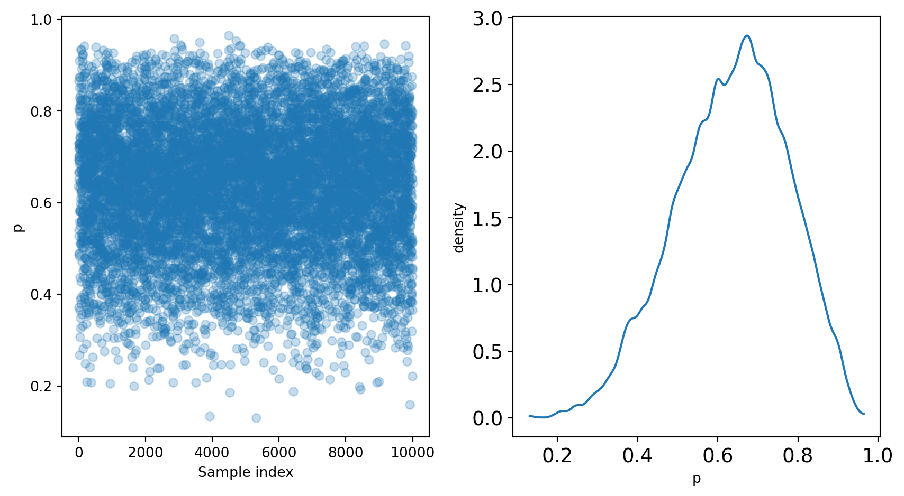

Show code
pr_p_x = 0.95
pr_p_negx = 0.01
pr_x = 0.001
pr_p = pr_p_x * pr_x + pr_p_negx * (1 - pr_x) # marginal likelihood
pr_x_p = pr_p_x * pr_x / pr_p
print(f"Probability of X: {pr_x_p:.4f}")Probability of X: 0.0868Suppose we have a test for condition \(X\). The test correctly detect \(X\) \(95\%\) of the time. In mathematical notation, \(\Pr(\text{positive} \mid X)=0.95\). We also know that \(1\%\) of the time, the test records a false positive, i.e. \(\Pr(\text{positive} \mid \neg X)=0.01\).
To determine the probability of \(X\), given a positive test result, we can use Bayes’ theorem:
\[ \Pr(X \mid \text{positive})=\frac{\Pr(\text{positive} \mid X)\Pr(X)}{\Pr(\text{positive})} \]
\(\Pr(X)\) is the incidence of \(X\), which is known to be \(0.1\%\).
Probability of X: 0.0868This means that the probability \(X\) with one positive test is only 0.868.
With two positive tests, the probability soars to > 90%, demonstrating why many medical test require two positive results:
Probability of X: 0.9003But that was mathy, and we can get more intuitive by thinking in counts:
This simplifies the math wonderfully:
\[ \Pr(X \mid \text{positive}) = \frac{95}{95+999} = \frac{95}{1094} \approx 0.0868 \]
And for two positive tests, we can follow a similar counting pattern:
So, the math for two positive tests is:
\[ \Pr(X \mid \text{positive}) \approx \frac{90}{90+10} = \frac{90}{100} = 0.90 \]
Why counts?
Recall the sampler from chapter 2:
After running the sampler, we are left with p, representing the posterior distribution.
We can sample from the posterior distribution to replicate a posterior density:
# Sample from the posterior
p_sample = np.random.choice(p_grid, size=10000, replace=True, p=posterior)
# Plot the results
import arviz as az
from matplotlib import pyplot as plt
x0 = np.linspace(0, len(p_sample), num=len(p_sample))
x1 = np.linspace(0, 1)
fig, (ax_samples, ax_density) = plt.subplots(1, 2, figsize=(9, 5))
ax_samples.scatter(x0, p_sample, alpha=0.25)
ax_samples.set_xlabel("Sample index")
ax_samples.set_ylabel("p")
az.plot_kde(p_sample)
ax_density.set_xlabel("p")
ax_density.set_ylabel("density")
fig.tight_layout()
plt.show()
These samples can be used to further analyze the posterior.
Summarizations of the posterior distribution can broadly be divided into three categories:
An example of such a question is “What is the chance that less than 50% of the Earth is covered in water?” This question can be answered using samples of the posterior:
Pr(p < 0.5) = 0.1719Using the grid-approximation method, we see that 17% of the posterior distribution is below 0.5.
Since grid-approximation is generally not practical, it’s useful to see that a similar result can be achieved directly from the samples of the posterior:
Pr(p < 0.5) = 0.1726The takeaway here is that sampling from the posterior is both efficient and effective.
Sometimes you want to know the “bottom 25%” or “middle 50%.” These are intervals of defined mass.
Percentile intervals are an example of intervals of defined mass:
Bottom 25%: (0.1491 ,0.5425)Middle 50%: (0.5425 ,0.7417)You can also compute the highest posterior density interval (HPDI), which captures the interval with the highest posterior probability. While percentile intervals are evenly spaced around the point estimates, HPDI’s are not necessarily so.
There are several types of point estimates useful in Bayesian analysis.
The parameter with the highest posterior probability is the maximum a posteriori (MAP) estimate.
This can be achieved on the samples from the posterior as well.
MAP (sampled): 0.6396Of course, mean and median are also available point estimates.
mean: 0.6383
median: 0.6466The choice of estimate is yours!
One way to compare the point estimates is to use a loss function, which determines the cost of any one point estimate. It is important to note that different loss functions imply different estimates, so it is best to consider multiple. Absolute loss implies the posterior median and quadratic loss implies the posterior mean.